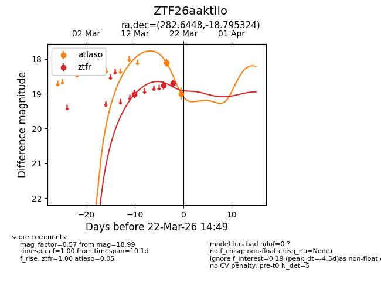
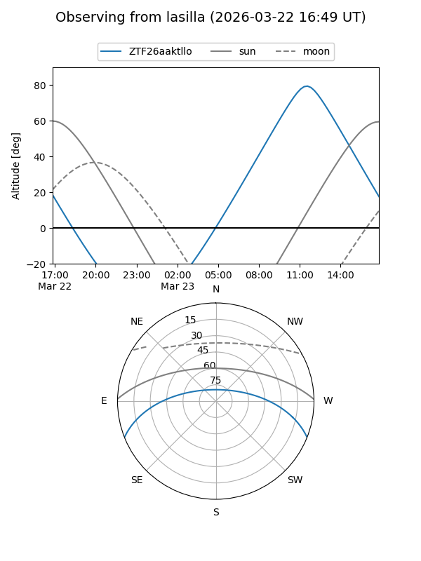
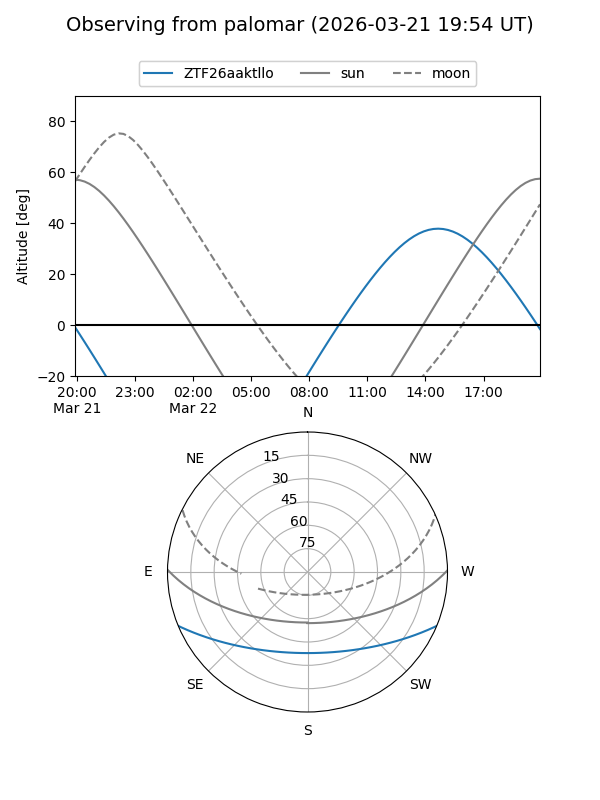
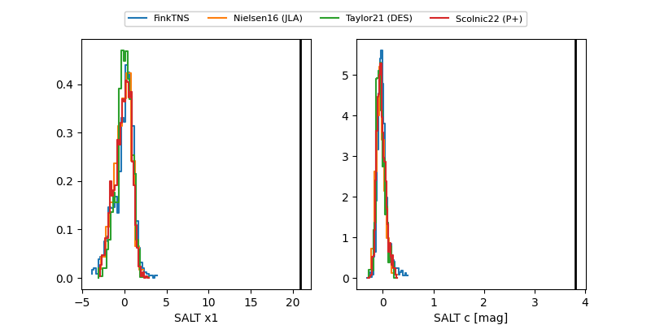

ZTF26aaktllo
Target ZTF26aaktllo at 2026-03-22 14:51
Aliases and brokers:
FINK: link
Lasair: link
ALeRCE: link
alt names
ZTF26aaktllo (ztf,fink_ztf)
Coordinates:
equatorial (ra, dec) = 282.6448,-18.79532
equatorial (HMS+DMS) = 18:50:34.74,-18:47:43.17
galactic (l, b) = (15.9909,-8.26522)
Flags:
Photometry:
last atlaso=18.99, ztfr=18.70
2 atlaso, 3 ztfr detections
Lightcurve

Visibility


Additional plots
